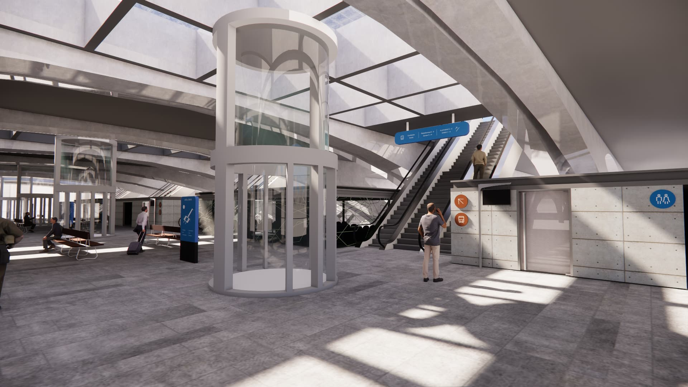
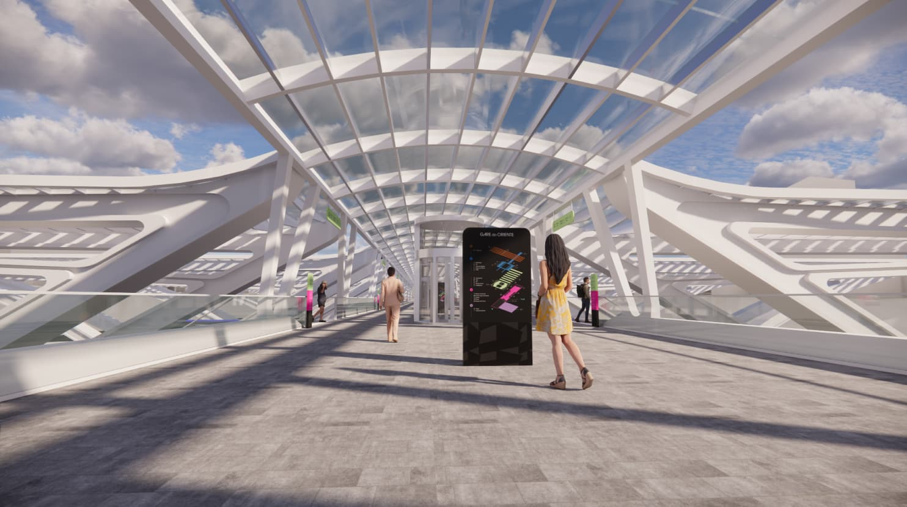
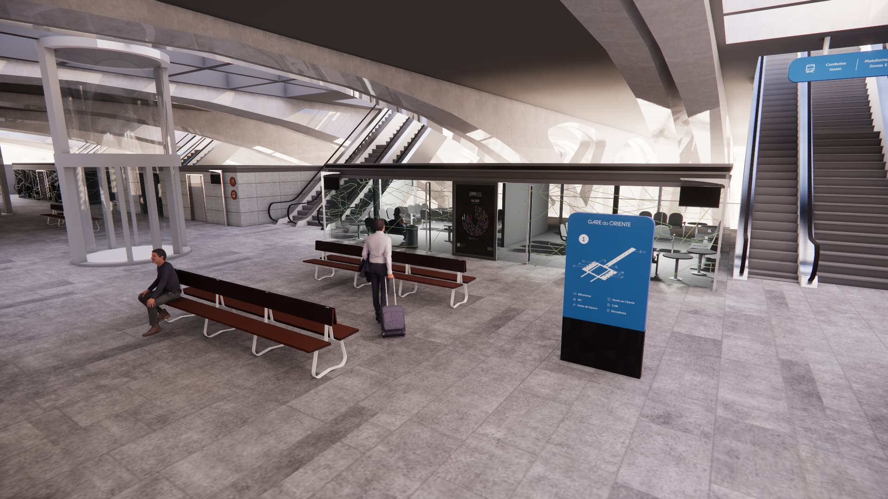
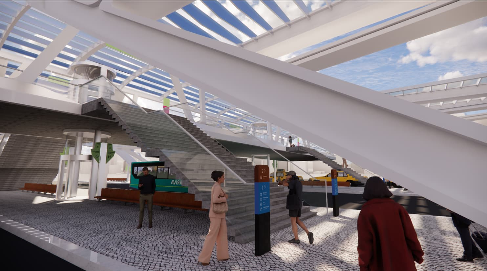
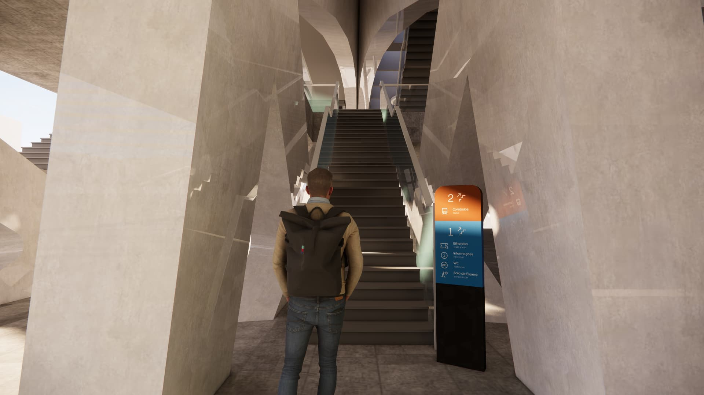

The story
Narrative Overview
On a quiet night train, two men sit across from each other, sharing a moment that feels both ordinary and risky. A simple game of cards begins, slowly shifting the atmosphere as the boundary between reality and imagination starts to dissolve.
As the cards come to life, the game transforms into a symbolic journey through unfamiliar spaces, where connection, tension, and escape take center stage. Moving between intimate moments and surreal encounters, Descarrilados unfolds as a story about closeness, chance, and the fragile line between play and danger.





